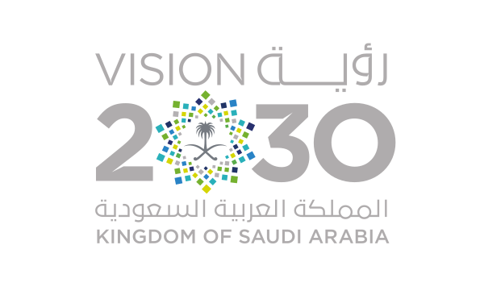

المملكة العربية السعودية
وزارة التعليم
الإدارة العامة للتعليم بمنطقة مكة المكرمة
ابتدائية بحرة المجاهدين الخامسة

ملف الإنجاز المهني
للمعلمة المتميزة
"التعليم رسالة سامية تُبنى بها العقول وترتقي بها الأمم.. نسعى بإتقان وشغف لإلهام جيل المستقبل"
فهرس محتويات ملف الإنجاز
خارطة التوثيق والشواهد المنظمة للأداء المهني
البيانات الوظيفية، المؤهلات، وفلسفة التعليم
ميثاق أخلاقيات مهنة التعليم وقيم المعلمة
البرامج التدريبية، الورش، ومجتمعات التعلم المهنية
شواهد تعزيز مهارات القراءة والكتابة والأنشطة التفاعلية
نماذج من أعمال الطالبات والخطط العلاجية والتكريم
السيرة الذاتية والرؤية التربوية
بيانات ومرتكزات الأداء التعليمي
الريادة في تأسيس طالبات الصف الثاني الابتدائي على حب لغتنا العربية الفصحى وتمكينهن من مهارات القراءة بطلاقة والكتابة التعبيرية الواعية في بيئة محفزة وآمنة تسهم في بناء جيل طموح وواعٍ.
توظيف استراتيجيات التدريس النشط والتقنيات التعليمية الحديثة لرعاية الفروق الفردية وغرس القيم الإسلامية والوطنية، وتحفيز طالباتي نحو الشغف المعرفي والتعلم المستمر بأسلوب تربوي جاذب.
البيانات المهنية والتعليمية
مدونة السلوك الوظيفي وأخلاقيات المهنة
الالتزام بميثاق مهنة التعليم وأنظمة الخدمة المدنية
رسالة ومكانة المعلم
التعليم مهنة ذات قداسة ومسؤولية عظمى، وتستمد مكانتها من شرف غايتها في بناء الإنسان؛ وتلتزم المعلمة بأداء واجباتها بأمانة وإخلاص متوخية مرضاة الله تعالى وإعلاء راية الوطن المعطاء.
الأخلاقيات تجاه الطالبات:
- العدل والمساواة والإنصاف بين جميع الطالبات دون تمييز.
- الرفق وبث الطمأنينة وتنمية الثقة بالنفس وحب التعلم.
- حفظ خصوصية الطالبات وأسرهن ومعالجة المشكلات بحكمة.
الأخلاقيات تجاه المجتمع والزملاء:
- التعاون الإيجابي والتكامل مع الزميلات وإدارة المدرسة.
- توثيق الشراكة التربوية المثمرة مع أمهات الطالبات.
- تمثيل القدوة الحسنة سلوكاً ومظهراً وفكراً وطنياً معتدلاً.
"أعاهد الله تعالى على الالتزام التام بكافة بنود مدونة السلوك الوظيفي، وبذل قصارى جهدي لتنشئة طالباتي على الهدى وحب المعرفة وخدمة الوطن."
التطوير والنمو المهني المستمر
سجل البرامج التدريبية ومجتمعات التعلم المهنية
| # | عنوان البرنامج التدريبي / ورشة العمل | الجهة المنظمة | الساعات | التاريخ |
|---|---|---|---|---|
| 1 | استراتيجيات تدريس القراءة السريعة والفهم القرائي للصفوف الأولية | مكتب التعليم ببحرة | 10 س | 1448/02/15 |
| 2 | توظيف الألعاب اللغوية الرقمية في تعزيز مهارات الإملاء | إدارة التدريب والابتعاث | 5 س | 1448/03/10 |
| 3 | التقويم التكويني وأساليب قياس الفاقد التعليمي في مادة لغتي | المدرسة (مجتمع مهني) | 4 س | 1448/04/02 |
| 4 | التمايز التعليمي ورعاية الطالبات ذوات صعوبات التعلم الأكاديمية | منصة تطوير المهني | 8 س | 1448/05/20 |
| 5 | برنامج تدريبي مسجل / ورشة تخصصية لاحقة | - | - | - |
المشاركة في جلسات تبادل الزيارات بين معلمات الصفوف الأولية بالمدرسة لدراسة نواتج تعلم مادة لغتي وتطبيق دروس نموذجية وتطوير أدوات القياس التشخيصية للارتقاء بمستوى طالبات الصف الثاني.
البرامج والأنشطة والمبادرات الصفية
توثيق الفعاليات الإثرائية واللاصفية لمادة لغتي
مبادرة "حروفي المضيئة وطليقات القراءة"
مبادرة سنويةبرنامج قرائي أسبوعي لتحفيز طالبات الشُعب (1 - 2 - 3) على القراءة السريعة للنصوص وفهم المقروء مع تخصيص شجرة الإنجاز لتتويج فارسات القراءة أسبوعياً.
نادي "براعم الخط والإملاء الجميل"
نشاط إثرائيورش عمل مصغرة لتدريب الطالبات على مهارات رسم الحروف الهجائية على السطر وتفادي الأخطاء الإملائية الشائعة في المدود والتنوين والتاء المربوطة.
مسرحة المناهج: "لغتي هويتي وفخري"
نشاط صفي مسرحيتحويل نصوص دروس لغتي إلى مشاهد تمثيلية مسرحية تؤديها الطالبات باللغة العربية الفصحى لتعزيز الثقة ومهارات الإلقاء والخطابة.
استمارة إدراج شاهد / تقرير نشاط
يمكن طباعة هذه الصفحة وتكرارها لتوثيق أي برنامج أو درس تطبيقي داخل الأقسام
......................................................................................................................................................................................................................................................................................................................................................
فاطمة الحربي
........................................